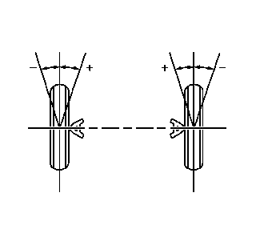

前束的说明

车轮前束指前轮和/或后轮从正前方位置向内或向外的偏转程度。车轮向内转时，车轮前束为正 (+)。车轮向外转时，车轮前束为负 (-)。车轮前束的实际值通常仅为几分之一度。车轮前束的作用是确保两侧车轮平行滚动。
车轮前束还可补偿车轮向前滚动时车轮支撑系统引起的少量偏移。换言之，如果车辆静止时将车轮设置为正车轮前束，当车辆行驶时，两侧车轮将平行滚动。
车轮前束调整不当将导致轮胎过早磨损以及转向不稳。